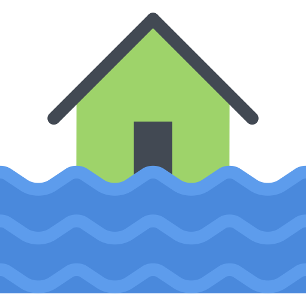

PORTAL DE MAPAS
Aqui você encontra mapas digitais, banco de dados, gráficos e informações georreferenciadas do município sobre os mais diversos assuntos.

MAPEAMENTO DA ENCHENTE E ZONAS AFETADAS
Aqui encontra-se o mapeamento da área urbana da cidade, com foco nas regiões afetadas pelas enchentes, com um conjunto importante de camadas geográficas.
REGIÕES DE RISCO
Local com mapeamento de pontos correspondente a poços artesianos, casas com estrutura comprometida, riscos de deslizamento, apontando para rotas no Google Maps.